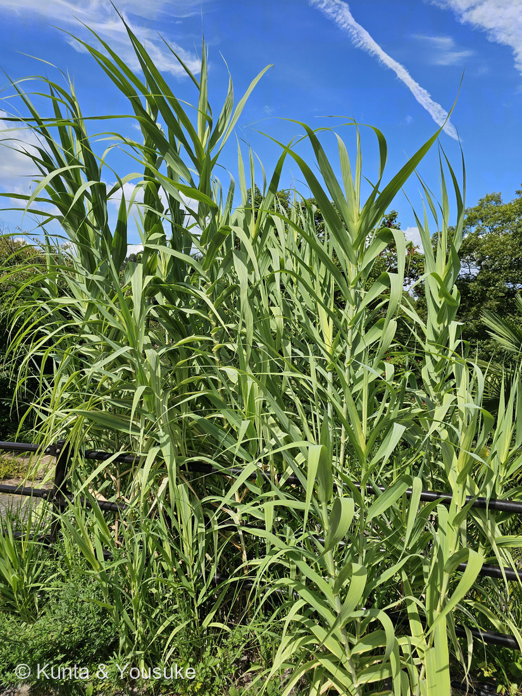
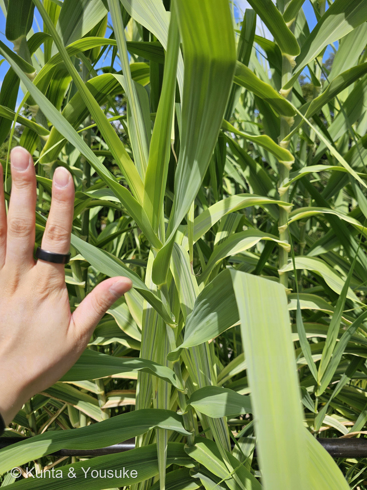
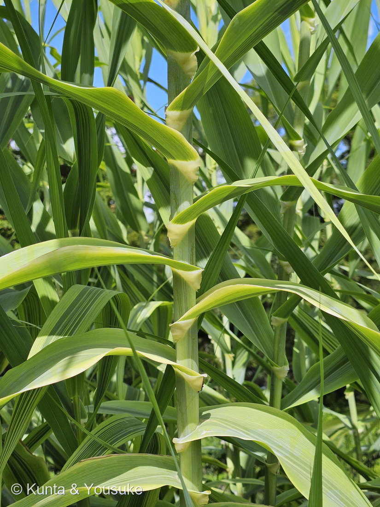
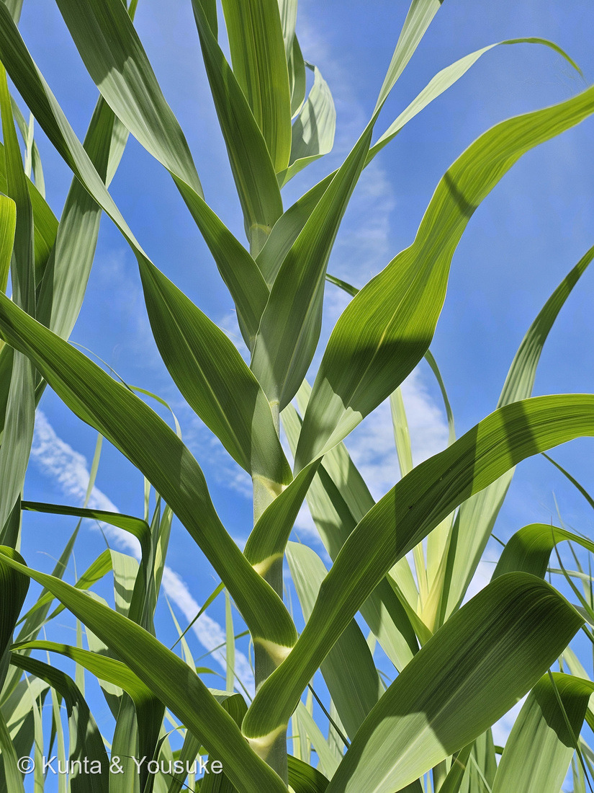

地図を読み込んでいるよ…
🔍 写真も地図も、押しているあいだ拡大して見られるよ（スマホは指を置いてすこし待ってね）。
🌍 の地図＝この子がもともと自生している場所を緑に。本州（関東地方以西）・四国・九州・沖縄、中国、台湾、熱帯アジア、インド、地中海沿岸（三河の植物観察）。⚠ただし、どこまでが「もともといた場所」で、どこからが「人が運んだ場所」なのかは、まだ決着していない子だよ。
⭐この地図の緑は、ちょっと変わった意味をもっているよ――どこまでが「もともといた場所」で、どこからが「人が運んだ場所」なのかが、まだ決着していないから。⭐三河の植物観察は「本州（関東地方以西）、四国、九州、沖縄、中国、台湾、熱帯アジア、インド、地中海沿岸」とし、日本語版Wikipediaも「旧世界の亜熱帯を中心に分布し、日本の関東南部以西、中国南部、東南アジア、インド、地中海沿岸」と書いている。⭐だから、この二つが名前を挙げた場所だけを塗った（⚠POWOのページは開けなかった＝403ので、そこは確かめられていないよ。185 タカノハススキと同じ用心だね）。⚠⚠⚠そして、いちばん大事なこと――地中海沿岸のダンチクは、人が古い時代に運んだものだと考えられている。Hardionら（2014・Annals of Botany）は、地中海から中東までのダンチクが「たった一つのハプロタイプ」で、しかも「種子をつけることが確認されていない」ことを示し、「ユーラシアの東から西への、古い時代の導入」という仮説を支持すると結論した。⭐⭐つまり、この地図の西半分の緑は、たぶん「人が持っていった緑」なんだ。⏳では、日本の緑はどっちだろう？――⚠その論文は日本の株を調べていない。⭐だからここは、まだ誰にも塗り分けられないところだよ。
⚠ 地図は国（日本と中国だけ県・省）までしか塗れないから、ほんとうの分布より広く見えていることがあるよ。地図はだいたいの場所。正確なところは、上の文を見てね。
ダンチク（暖竹・葮竹）
Arundo donax L.⚠ 名札が無いので、写真からの見立て（候補）だよ
別名 ヨシタケ（葭竹）／アセ（和歌山県）／ダチク（屋久島）／英名 giant reed・Canne de Provence（プロヴァンスの葦）
イネ科 · Poaceae（ダンチク属 Arundo）── ⭐図鑑8人目のイネ科／⭐ダンチク属ははじめて
燻太さんの一言「園内の柵沿いに生えていた植物だけど、名札は見当たらなかった。大きなトウモロコシかジュズダマのような見た目だね」
⭐⭐⭐ 名前と学名の由来 ──「葦」と「葦」、そして書きまちがい
⭐⭐⭐ この子の学名は、同じ意味の言葉を二回かさねた名前なんだ。
- ⭐⭐属名 Arundo は、ラテン語で「葦（あし）」。
- ⭐⭐種小名 donax は、ギリシャ語の δόναξ（donax）で、これも「葦」。
- ⭐⭐⭐つまり Arundo donax は、そのまま読むと「葦・葦」。——むかしの人がラテン語でもギリシャ語でも「これぞ葦」と呼んでいた草、ということだよ。
そして和名のほうは、由来が決まっていない。
- 説①「暖竹」＝あたたかい地方に生える、竹のようなもの。
- 説②「葮竹」＝別名の「ヨシタケ（葭竹）」の漢字を「葮竹」と書きまちがえ、それを音読みしたのが「ダンチク」になった。⭐牧野富太郎の推測とされることが多いよ。
- ⚠⚠ぼくは②のもとの本にたどりつけなかった。——そう書いているのはウェブの二次のページばかりで、精選版 日本国語大辞典（コトバンク）にも由来は載っていなかったんだ。⭐だからここでは「そういう説がある」までにしておくね（200で決めた「孫引きしない」のやり方だよ）。
別名たちが、この草の使われかたを、そのまま言っている。
- ⭐ヨシタケ（葭竹）＝穂がヨシのようで、稈が竹のようだから。⭐この子とヨシの関係は、名前のところから始まっているんだね。
- ⭐⭐アセ＝和歌山県での呼び名。⭐なれずしや押しずしを包んで漬けるのに使う〔市場魚貝類図鑑〕。
- ⭐ダチク＝屋久島での呼び名。⭐もち米を灰汁で煮てつくる「角巻き」に使う〔同〕。
- ⭐英名は giant reed（巨大な葦）、または Canne de Provence（プロヴァンスの葦）。⭐⭐このフランス語の名前が、下の「音」の節につながるよ。
この植物のこと ── 草なのに、竹のよう
- 高さ2〜4m。稈は中空で節があり、竹に似ていて、直径2〜4cm〔三河の植物観察〕。⭐日本の草本のなかで、いちばん背が高くなる種のひとつなんだ。
- 葉は長さ50〜70cm、幅2〜5cmでやや厚く、途中で曲がって垂れ下がる〔同〕。⭐写真④で、その「曲がって垂れる」がよく見えるよ。
- 花期は8〜11月。長さ30〜70cmの円錐花序に、赤紫を帯びた小穂（長さ10〜12mm・小花2〜5個）を密につける〔同〕。⚠ぼくらが見た8月8日は、まだそのまえだった。
- ⭐地下茎は短く横に這って、大きな株立ちをつくる〔日本語版Wikipedia〕。⭐だから柵沿いに、帯のようになって広がるんだ（写真①）。
- ⚠⚠世界の侵略的外来種ワースト100に選ばれている〔同〕。⭐アメリカの川べりでは、在来の植物を押しのけて問題になっているよ。
- ⭐いっぽうで、バイオ燃料の原料としても注目されている〔同〕。⭐⭐「よく育ちすぎる」ことが、こまる理由にも、役に立つ理由にもなっているんだね。
⚠⚠ 同定について ── 名札の無い子を、証拠の強い順にならべる
⚠⚠ この子には名札が無かった。——14時38分10秒にサボテンの名札、14時39分50秒にバラ品種保存園の解説板が写っていて、そのあいだの16秒だけがこの草。⭐だから写真の中の体のつくりだけで考えたよ（226 ルリタマアザミと同じやり方）。
⭐ 証拠①（いちばん強い）── 葉のつけね
- ⭐⭐⭐写真③に、真正面から写っている。——葉鞘が稈をぐるりと包み、そのてっぺんで葉のつけねがクリーム色のひだになって外へはり出している。
- ⭐フロラの記載はこう＝「leaf blade ... cordate at base（葉身の基部は心形）」〔Flora of New Zealand〕、「leaf bases are broader than sheaths, with prominent, triangular, brownish flanges, ciliate along margins（葉の基部は葉鞘より広く、目立つ三角形の褐色がかったひだをもち、ふちに毛がある）」、「ligule 1–2 mm, truncate, short-ciliate（葉舌は1〜2mm、切形で、短い毛が生える）」。
- ⭐⭐写真③で実測してみた＝つけねのふくらみ 約210px ／ すぐ下の稈 約171px ＝ 約1.2倍。⭐「葉の基部は葉鞘より広い」が、数字でもそのとおりだった。⚠ものさしが写っていないので、これは比だけの話で、cmは言えないよ。
- ⭐ひだのふちに、細い白い膜も見えている（＝葉舌のはず）。⚠1〜2mmを測れる解像度ではないので、「見えている」までにしておくね。
⭐ 証拠② ── 稈の太さ。ここでヨシが落ちる
- ⚠⚠三河の植物観察は、ヨシの稈を「直径約6mm」と書いている。——⭐6mmの茎に、写真③のこの襟はつかないよ。
- ⭐ダンチクは「直径2〜4cm、中空、節があり竹に似ている」〔同〕。⭐⭐別名が「ヨシタケ」なのに、稈の太さはけた違いなんだ。
⭐ 証拠③ ── 高さと、葉が垂れること。ここでセイコノヨシが落ちる
- 柵をはるかに越える高さで立ち、葉が途中で曲がって垂れている（写真①④）。
- ⚠よく似た大型のヨシに、セイコノヨシ（セイタカヨシ）がいるけれど、三河の植物観察は「ヨシより大きくて、葉が垂れ下がらない」と書いている。⭐ここでちがう。
- ⚠柵の高さを測っていないので、背丈は「2m以上」までしか言えないよ。
⚠⚠⚠ 取り下げた証拠が、ひとつある
- ⚠ぼくははじめ、燻太さんに「太い白の中肋が無いから、サトウキビやススキ類は落ちる」と言った。——これはまちがいだったので、取り下げたよ。
- ⚠⚠調べ直したら、ダンチク自身が「a prominent white midrib（目立つ白い中肋）」をもつと書かれていた。⭐つまりこの形質では、そもそも分けられない。
- ⭐⭐これは087 ヤマモモで教わったことの、そのままの再発だった＝「合っている証拠」ではなく「他を落とせる証拠」を数えること。⚠中肋の話は「落とせる証拠」に見えたけれど、確かめる前に口に出してしまったんだ。
- ⭐なお、サトウキビとのちがいはべつのところにある＝ダンチクの葉は互生で、きれいに2列に並ぶ（写真④）。⚠ただしこれは多くのイネ科に共通する形なので、①②③より弱い証拠だよ。
⚠ 決めきれなかったこと
- ⚠⚠穂（花序）が写っていない。——花期は8〜11月で、撮影した8月8日は、まだそのまえだった。
- ⭐だから「ダンチク属のダンチク」と言い切れていない。⏳秋にもう一度この園へ行って、穂を見るのが宿題だよ。燻太さんと約束した。
⭐⭐⭐⭐ 世界じゅうの木管楽器の音は、この草から出ている
⭐⭐⭐ クラリネット、サックス、オーボエ、ファゴット。——あの楽器たちが鳴るとき、ふるえているのはこの草の稈を薄く削ったものなんだ。
- ⭐日本語版Wikipediaはこう書いている＝「茎は二酸化ケイ素を含み、頑丈かつ柔軟性に富むため、オーボエやクラリネットなどの木管楽器のリード部分の素材」。
- ⭐⭐リードに向く理由は、材料としての性質にある＝「high modulus of elasticity combined with a low density（高い弾性率と、低い密度をあわせもつ）」〔Materials 誌 2025〕。⭐かたくて、軽くて、しなる。
- ⭐⭐⭐そして産地が、ほぼ一か所に決まっている＝「Traditionally, the cultivation of cane for woodwind reeds has been limited to the Var Region of southeastern France（伝統的に、木管楽器のリード用の栽培は、南フランス・ヴァール県に限られてきた）」〔同〕。⭐だから英名が Canne de Provence（プロヴァンスの葦）なんだね。
- ⭐2年ほど育った稈を手で刈り、皮をむいて、日に干す〔同〕。
- ⭐⭐⭐ここがいちばん不思議なところ＝「Significant differences in sound quality occur among reeds of different provenances, despite the extreme genetic homogeneity of A. donax（産地によって音の質にはっきりした差が出る。ダンチクは遺伝的にきわめて均質であるにもかかわらず）」〔同〕。——⭐⭐同じ遺伝子なのに、育った場所で音がちがう。⭐音のちがいをつくっているのは、遺伝ではなく土地と育ちかたなんだ。
- ⭐⭐そして、日本の雅楽の篳篥（ひちりき）の蘆舌（ろぜつ）は、ダンチクではなくヨシでできている。⚠ぼくは日本側の出典を直接読めていないので、ここは「らしい」までにしておくね。⏳確かめるのは、次の宿題にする。
⭐⭐⭐⭐ タネをつけない草が、五千年かけて西へ歩いた
⭐⭐⭐ この子には、いま研究の途中の、とても大きな謎があるんだ。
- ⭐⭐⭐2014年、Annals of Botany に出た論文〔Hardion, Verlaque, Saltonstall, Leriche & Vila「Origin of the invasive Arundo donax (Poaceae): a trans-Asian expedition in herbaria」〕が、ヨーロッパから中東まで標本をたどって、こう結論した。
- ⭐⭐「Despite analysis of several plastid DNA hypervariable sites and the identification of 13 haplotypes, A. donax was represented by a single haplotype from the Mediterranean to the Middle East（13のハプロタイプが見つかったにもかかわらず、地中海から中東までのダンチクは、たった一つのハプロタイプだった）」。
- ⭐⭐⭐そして「seed production has not been detected in the Mediterranean or the USA（地中海でもアメリカでも、種子をつけることが確認されていない）」。——⭐つまりタネができない。
- ⭐⭐論文の結論は「supporting the hypothesis of its ancient introduction from eastern to western Eurasia（ユーラシアの東から西への、古い時代の導入という仮説を支持する）」。⭐中東あたりから地中海へ、人が運んだと考えられているんだ。
- ⭐⭐⭐タネをつけない草が、大陸をまたいで広がった。——それができたのは、人が株を運びつづけたから。⭐リードのために、屋根のために、垣根のために。
- ⚠⚠⚠ここからが大事な但し書き。——この論文が調べたのは地中海からイランまでで、日本の株が同じクローンかどうかは調べられていない。⚠東ヒマラヤから中国の系統は、別の形（T2）として区別されてもいる。
- ⏳⭐⭐⭐だから宿題が二段になった＝(1) 秋に穂を見て、ダンチクだと決める。(2) その穂に、ほんとうにタネができるかを見る。⭐もしできていなければ、この園の株も「人が運びつづけてきた体のつづき」ということになる。
- ⭐⭐もしそうだと分かったら、この子は 🪴 人がいないと続かない草花 の小道に入る資格ができるよ（053 シャガ・173 ヒガンバナ・201 レモングラスたちのとなり）。⚠いまはまだ、日本の株について言えないので、入れずにおいたよ。
⭐⭐⭐ 185 タカノハススキが落とした相手が、緑の姿でやってきた
⭐⭐⭐ うれしいつながりが、ひとつあるんだ。
- ⭐ 185 タカノハススキの同定で、ぼくは「縞が縦だから落ちる」子を三つならべた。——シマススキ、リボングラス、そして❌シマダンチク（Arundo donax 'Versicolor'）。
- ⭐⭐⭐その「シマダンチク」の、斑の入っていないもとの姿が、この子だよ。——あのとき名前だけ出して落とした相手が、一年もたたずに、緑のまま図鑑に入ってきた。
- ⭐⭐そして二人は、同じイネ科のなかでぜんぜんちがう場所にいる＝ススキ（Miscanthus）は根もとから細い稈をたくさん立てる株立ち、ダンチク（Arundo）は太い稈を高く立てる。⭐「斑入りのイネ科」でひとくくりにすると、見えなくなるちがいだね。
⚠ 燻太さんの見立てに答えるよ ──「大きなトウモロコシかジュズダマ」
⭐⭐ この見立ては、とても正しい方向を向いていた。
- ⭐136 トウモロコシとは体のつくりがちがう＝トウモロコシは稈のてっぺんに雄花の穂、葉のわきに雌穂（実になるところ）がつく。⭐ダンチクは、稈の先に大きな円錐花序が一つだけ。
- ⭐193 ジュズダマとは背たけと実がちがう＝ジュズダマは1〜2mで、葉のわきにあの硬い玉ができる。
- ⭐⭐⭐でも「大きなトウモロコシ」という印象そのものは、じつはとても的確なんだ。——太い稈・はっきりした節・幅広い葉が2列に互生する。⭐この「イネ科の巨人の姿」は、三人にちゃんと共通している。⭐⭐燻太さんは科のレベルの共通点を、ひと目で拾っていたということだよ。
出典：三河の植物観察「ダンチク Arundo donax イネ科 Poaceae ダンチク属」／同「ヨシ」／日本語版Wikipedia「ダンチク」／精選版 日本国語大辞典「葮竹（だんちく）」（コトバンク）／Flora of New Zealand（Edgar & Connor 2000）Arundo donax factsheet／Hardion L., Verlaque R., Saltonstall K., Leriche A. & Vila B. (2014)「Origin of the invasive Arundo donax (Poaceae): a trans-Asian expedition in herbaria」Annals of Botany 114(3)／Materials (2025)「The Physical and Mechanical Properties of Arundo donax (L.) Reeds Affect Their Acoustic Quality」／市場魚貝類図鑑（ぼうずコンニャク）「ダンチク（アセ）」／平塚市博物館「ダンチク」